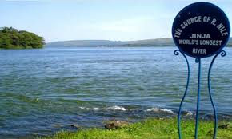

The image above shows the Source of the River Nile located in Jinja, Uganda. This is the point where the River Nile begins its long journey northwards from Lake Victoria. The Nile flows through several African countries before finally emptying into the Mediterranean Sea.
The site is surrounded by calm waters, green vegetation, and a peaceful natural environment. The wide body of water seen in the picture represents the beginning of one of the most important rivers in the world. Visitors often come to this area to enjoy boat rides and appreciate the natural beauty.
Historically, the source of the Nile was identified in 1862 by the British explorer John Hanning Speke. His discovery solved a long-standing geographical mystery about the origin of the River Nile.